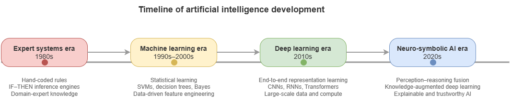
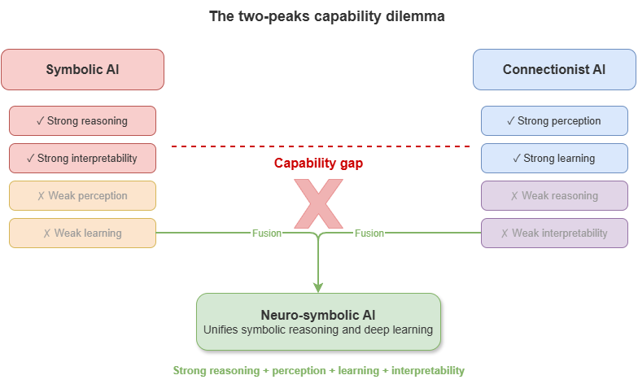
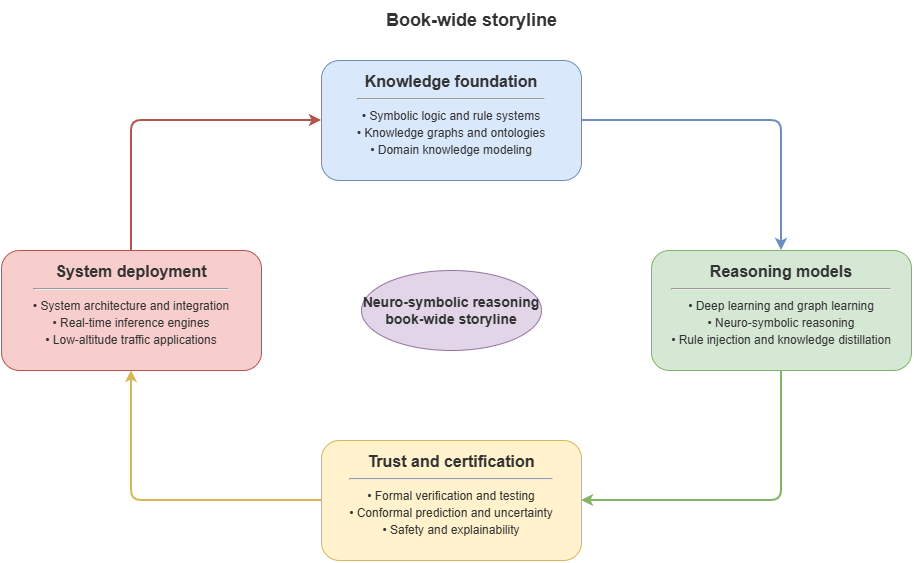

This chapter addresses a question that runs through the entire book: why, after deep learning’s enormous success, have researchers and industry again turned their attention to neuro-symbolic artificial intelligence? To answer it, we must return to the historical development of AI and re-examine the theoretical promises, technical achievements, and intrinsic limits of symbolic AI and connectionism. The former once sought to build “thinking machines” from logic, rules, and explicit knowledge; the latter reshaped “perceiving machines” through large-scale data, compute, and gradient-based learning. Each achieved partial victories and each exposed fundamental weaknesses when confronting more complex, open, and uncertain real worlds. In this landscape—two peaks standing side by side, yet both insufficient—neuro-symbolic AI has gradually been reconceived as a path that may connect perception, knowledge, reasoning, and decision-making.
The chapter first reviews the rise, flourishing, and constraints of symbolic AI, analyzing its strengths in knowledge representation, logical reasoning, and interpretability, and its bottlenecks in knowledge acquisition, robustness, and generalization. It then discusses how connectionism, through deep learning, broke through in vision, speech, and natural language processing, while highlighting black-box behavior, fragility, and reasoning deficits. On this basis it introduces the long-standing “two-peaks dilemma” of AI—the structural split between “strong perception—weak reasoning” and “strong reasoning—weak perception.” Finally, drawing on the cognitive-science framing of System 1 and System 2, it argues that fast pattern recognition and slow rule-based reasoning are not substitutes but should cooperate within a unified system.
1.1 The rise and fall of symbolic AI: from expert systems to the knowledge-engineering bottleneck#
The earliest mainstream paradigm in artificial intelligence was symbolic AI, centered on symbolic representation and logical reasoning. Its basic assumption is that intelligence consists in manipulating symbols: if objects, relations, rules, and goals in the world can be encoded in a formal symbolic system and combined with appropriate inference mechanisms, machines can exhibit human-like thought. This view was deeply shaped by formal logic, mathematical proof, and early cognitive science, and it underpinned classical AI theory.
Methodologically, symbolic AI emphasizes three core capabilities. The first is knowledge representation—how to structure and make explicit world knowledge using logical formulas, semantic networks, frames, production rules, ontologies, and similar formalisms. The second is logical reasoning—how, given facts and rules, to derive new conclusions through deduction, induction, analogy, and search. The third is problem solving—how to cast tasks as state-space search, constraint satisfaction, or rule matching and let the system complete them under preset strategies. In short, symbolic AI’s advantage lies less in “learning automatically from data” than in “writing knowledge down and letting the machine compute by rules.”
This paradigm achieved striking successes in the mid-to-late twentieth century. In specialized domains such as medical diagnosis, fault detection, geological exploration, and financial decision-making, expert systems were once seen as emblematic of AI entering practice. An expert system typically comprises a knowledge base, an inference engine, and an explanation module: the knowledge base stores facts and rules curated by domain experts; the engine performs forward or backward chaining over rules; the explanation module answers why a conclusion was reached and which rules support it. Compared with many deep models today, expert systems stand out for being transparent, reviewable, and traceable—a natural fit for high-risk, high-accountability professional settings.
Yet symbolic AI’s prosperity did not last. As applications scaled, bottlenecks sharpened and converged in the so-called knowledge-engineering bottleneck. Knowledge engineering is the end-to-end process of eliciting knowledge from domain experts, formalizing it, and building machine-processable rule systems. The difficulty is that real-world knowledge is far more complex, vague, contextual, and dynamic than early visions assumed. Much expert knowledge is not stored as crisp rules but as experience, intuition, implicit judgment, and context dependence—hard to translate fully into formal logic. Humans can do without always being able to say clearly why.
Symbolic AI therefore faces at least four structural difficulties.
First, knowledge acquisition is costly. High-quality rule bases require long interviews with experts, iterative revision, and continuous maintenance—expensive and slow. The more complex the knowledge, the higher the build cost.
Second, rule coverage is limited. Expert systems suit tasks with clear boundaries, stable processes, and relatively closed knowledge. In open environments, long-tail anomalies, or tightly coupled multi-factor problems, rule bases are hard to exhaust and systems fail easily.
Third, robustness is weak. Symbolic systems depend strongly on input format, semantic precision, and logical premises; they tolerate noise, ambiguity, perception error, and missing data poorly. Real information is often incomplete, inconsistent, or conflicting, and classical rule systems adapt only weakly.
Fourth, perceptual learning is lacking. Symbolic AI excels at knowledge already abstracted into symbols but not at automatically extracting representations from raw images, speech, or text. It resembles a “reasoner in the brain” without eyes, ears, or a sensory front end.
At a deeper level, symbolic AI’s problem is not only engineering difficulty but a default picture of the world as clearly decomposable, fully encodable, and exhaustible by rules. The real world abounds in fuzzy boundaries, dynamic change, and unknown disturbances. Pure symbolic AI thus slides from “elegant in theory” to “rigid in engineering.”
Symbolic AI has not lost its value—quite the contrary. Its strengths in explicit knowledge modeling, logical consistency, causal structure, explanation generation, rule auditing, and accountability remain hard for modern AI to replace. Today’s renewed interest in neuro-symbolic AI is not a return to vintage expert systems but a reactivation, under new data, compute, and models, of symbolic AI’s most valuable elements.
1.2 The rise of connectionism: deep learning’s success and the black-box crisis#
Unlike symbolic AI, connectionism does not begin by explicitly describing knowledge. It seeks emergent intelligent behavior through connections and weight updates among many simple computational units. Its inspiration comes from neuroscience and parallel distributed processing: human intelligence may depend less on explicit rules than on complex dynamical patterns formed by many neurons under stimulation. Connectionism treats intelligence as the ability to learn mappings from examples, not as symbolic calculation from prewritten rules.
Early neural approaches were limited by compute, data scale, and training algorithms and had a tortuous history. The turning point came in the twenty-first century, especially after big data, GPU acceleration, and mature backpropagation-based optimization. Deep learning’s success marked connectionism’s return to center stage. Convolutional networks broke through in image recognition; RNNs and variants advanced speech and sequence modeling; Transformers pushed deep learning toward general perception and language modeling. Machine translation, speech recognition, object detection, text generation, protein structure prediction, large language models, and more all rest on the connectionist line.
Connectionism’s rise rests on solving a problem classical AI struggled with: representation learning. Older systems relied on hand-crafted features; deep learning learns hierarchical representations from low-level local patterns to high-level semantic abstractions across layers. That lets models process raw data directly and approach or surpass human performance on very hard tasks. Compared with symbolic systems, deep learning has at least four notable strengths.
First, strong perception: deep models extract statistical regularities from massive raw data and perform well on high-dimensional vision, speech, and text.
Second, end-to-end learning: models optimize an overall objective from input to output, reducing error propagation from hand-piped modules.
Third, distributed generalization: relative to hand rules, deep models often tolerate input perturbations and local variation better, generalizing within a range from sample to sample.
Fourth, scalability: as data, parameters, and compute grow, connectionist methods often improve steadily—a clear scale effect.
Yet within this success, deep learning’s intrinsic limits have become clearer. It can classify patterns with high accuracy without necessarily “understanding” causal structure, logical constraints, or abstract rules behind them. In the large-model era this has not disappeared; if anything it is more salient. The core crisis is often called the black-box crisis.
The black-box crisis is not merely “humans cannot read the parameters.” It means decision processes lack transparent intermediate semantic structure, which yields several issues.
First, weak interpretability: deep models encode knowledge as high-dimensional continuous vectors; internal states are hard to map to human-understandable concepts, rules, or causal chains. Models give answers but often not why those answers.
Second, fragility and adversarial sensitivity: many studies show tiny perturbations can cause severe misclassification; behavior often degrades sharply out of distribution. Strong performance often assumes a stable training distribution.
Third, heavy data dependence: connectionist methods rely on large labeled or pretrained corpora; quality, coverage, and bias of data directly shape performance. In data-scarce, expensive-label, or prior-rich domains, purely data-driven routes are costly and inefficient.
Fourth, weak logical consistency: deep models learn correlation, not by default logical, physical, or regulatory constraints. They may be locally accurate yet globally inconsistent along a reasoning chain.
Fifth, difficult accountability: in medicine, traffic, aviation, justice, and other safety-critical domains, a system that only “answers” without “grounds” struggles to enter high-accountability workflows. When wrong, it is hard to explain failure modes, audit decisions, or assign institutionally acceptable responsibility.
Connectionism thus answers how machines see, hear, and generate, but not fully how they understand, prove, constrain, and take responsibility. Deep learning’s success is not the end of AI but a higher-level exposure of structural gaps: the stronger the model, the larger the system, the more critical the application, the less acceptable a black box driven only by statistical correlation.
That is the practical backdrop for revisiting neuro-symbolic methods. We do not deny deep learning; we ask, on top of its success, whether powerful perception and representation learning can be combined with explicit knowledge, logical rules, and auditable inference.
1.3 The two-peaks dilemma: the long-standing split between strong perception and weak reasoning#
Across AI’s history, a recurrent structural tension appears: different routes excel on one side yet struggle to unify perception, reasoning, generalization, and explanation. Symbolic AI is strong in logical reasoning, knowledge representation, and rule consistency but weak in perceptual learning, robust adaptation, and open worlds. Connectionism is strong in pattern recognition, continuous representation, and large-scale learning but weak in interpretable reasoning, logical consistency, and accountability. They occupy two peaks of intelligent systems yet remain split, without a unified general architecture.
This is the two-peaks dilemma. “Two peaks” does not mean two schools merely coexist; it means asymmetric development: one peak is “strong reasoning—weak perception,” the other “strong perception—weak reasoning.” The former is logically crisp in formal systems but weak on sensing complex reality; the latter is accurate on high-dimensional data but weak on deep structured thought.
The dilemma shows first in how knowledge is acquired. Symbolism relies on explicit prior knowledge—humans define concepts, relations, and rules, then machines reason on top. Connectionism relies on empirical data—models form internal representations from training samples. One is knowledge-strong and learning-weak; the other learning-strong and explicitly knowledge-weak. Real intelligence usually needs both learning from experience and priors for constraint and correction. Neither alone suffices in complex settings.
Second, the dilemma appears as a rupture in representational form. Symbolic AI uses discrete, composable, interpretable structures—logical terms, rules, graphs, ontologies. Connectionism uses continuous, distributed, dense vectors. Discrete forms suit rules and hierarchies but handle noise and vagueness poorly; continuous forms suit statistical similarity but carry strict logic and institutional constraints awkwardly. This is not a mere encoding difference but a difference in cognitive mechanism: one leans toward “sayable,” the other toward “learnable.”
Third, the dilemma concerns the nature of reasoning. Symbolic systems excel at deduction under explicit constraints and can yield structured proofs. Deep models approximate mappings from distributional patterns; their “reasoning” is often complex correlation fitting, not rule manipulation or causal inference in a strict sense. High scores on train/test sets can collapse under compositional generalization, counterfactuals, long constraint chains, or few-shot rule transfer.
More importantly, the dilemma limits AI in high-accountability real-world settings. In autonomous driving, low-altitude traffic, smart healthcare, industrial control, systems must not only “see” but “say clearly,” “stay within bounds,” and “be accountable when wrong.” Perception without logical constraint risks uncontrolled risk; rules without environmental adaptation cannot track complex dynamics. These settings naturally demand architectures that unify perception, representation, reasoning, calibration, explanation, and control—what the two-peaks picture says single routes struggle to supply alone.
Historically, many efforts have tried to bridge the gap: probabilistic and uncertain reasoning in expert systems; rule constraints and structural priors in machine learning; distributed representations combined with symbolic knowledge in NLP and KGs; tool use, retrieval augmentation, and external solvers in large models. Together they show AI need not choose between peaks forever but can move toward bridging and reconstructing the whole.
The two-peaks dilemma is thus not about which school “wins,” but about AI’s long lack of a unified cognitive architecture. The real question is not “rules or data” but how rules and data, logic and statistics, structure and learning complement each other in one system—the theoretical starting point of neuro-symbolic AI’s revival.
1.4 Lessons from cognitive science: complementary mechanisms of System 1 and System 2#
If the symbolic–connectionist debate exposes a technical split inside AI, cognitive science on human thinking offers a more explanatory frame. Kahneman and others’ System 1—System 2 account suggests human cognition is not monolithic but involves two interacting modes: one fast, intuitive, automatic, low-cost, good at pattern recognition and experiential judgment; another slow, deliberate, rule-driven, high-cost, good at logical analysis, planning, and complex reasoning. The split is a conceptual model in cognitive science, not a literal brain map, but it is highly suggestive for AI’s historical divergence and future integration.
System 1 can be read as experience-, association-, and matching-based intuitive processing. It responds quickly to familiar patterns with little explicit calculation—recognizing faces, tone, danger, filling in ambiguous text. System 1 is efficient, flexible, low-latency, yet prone to bias, illusion, and heuristic failure. Mapped to AI, today’s deep learning and large language models largely embody System 1: they learn patterns from huge data and predict or generate quickly on complex inputs, without always offering verifiable inference.
System 2 corresponds to explicit, slow, rule-oriented thought. It invokes symbols, operations, logic, and goal structure for stepwise solving, reflection, and control—proving theorems, designing flight procedures, checking regulations, comparing action plans. Its strengths are controllability, consistency, and reflection; its costs are speed and resource use, and it is ill-suited to massive raw perception. In AI, logical reasoning, KG query, constraint solving, planning, and formal verification align more with System 2.
The key lesson: high-level intelligence is not System 1 or System 2 alone but their division of labor and cooperation. Pure System 1 yields fast judgments without checks, hallucinations, or bias; pure System 2 is rigorous but cannot handle high-dimensional perception, real-time feedback, and fuzzy open worlds. Humans act effectively in open worlds because intuitive recognition and rule-based reasoning interact: System 1 proposes candidates; System 2 reviews, corrects, and proves when needed.
For AI, connectionism has long resembled building System 1; symbolism resembles building System 2. The issue is not which is “higher” but that both must sit in one architecture. Systems for complex reality need deep models to extract information quickly from vision, text, sensors, and trajectories, and symbolic reasoners to check constraints, preserve consistency, build audit chains, and support accountable judgments in high-risk settings.
In safety-critical systems this complementarity matters more. In low-altitude governance, state sensing, path prediction, and environment recognition need System-1-like fast pattern recognition; rule checking, conflict accountability, risk evidence, and regulatory interfaces need System-2-like explicit inference. A system that only “judges fast” may be efficient but unauditable under concurrency; one that only “reasons slowly by rules” may miss real airspace dynamics. Neuro-symbolic AI is not mechanical gluing of two technologies but an engineering reconstruction of System 1—System 2 coordination.
Moreover, the relation is dynamically scheduled: System 1 often suffices for routine tasks; System 2 is invoked for anomalies, conflicts, high-risk decisions, or when explanation and proof are required. Future neuro-symbolic systems must not only possess both modes but invoke different inference mechanisms by task complexity, risk level, and uncertainty—knowing when to be fast vs. slow, approximate vs. strict.
The value of System 1—System 2 is not labeling AI with cognitive analogies but showing that intelligence may be multi-mechanism synergy. Perception, experience, rules, review, planning, calibration, and explanation should not be mutually exclusive modules but layered capacities in one agent. Neuro-symbolic AI’s role is to implement that structure in engineering.
1.5 The proposal of neuro-symbolic AI: why unify perception, knowledge, reasoning, and decision-making#
After long coexistence and alternating dominance of symbolic and connectionist AI, a growing consensus holds that neither pure rule-driven nor pure data-driven approaches alone supports high-level intelligence in complex open worlds. The former resembles systems with “clear rules but no senses”; the latter resembles systems with “strong senses but weak structured understanding.” As applications move from closed labs to open environments, from single tasks to complex systems, and from fault-tolerant entertainment to high-risk decisions, the cost of this split grows. In that setting, neuro-symbolic AI (Neuro-Symbolic AI) is less often seen as a fringe hybrid and more as a direction that may reconstruct the overall architecture of intelligent systems.
Neuro-symbolic AI is not simply “stitching” neural nets and symbolic rules. It seeks, in one framework, to coordinate four capabilities long treated separately: perception, knowledge, reasoning, and decision-making. Perception extracts meaningful information from images, text, speech, trajectories, sensor streams. Knowledge organizes domain concepts, relations, constraints, and experience in explicit, shareable, maintainable form. Reasoning links knowledge and facts into logical structure, producing interpretable, checkable intermediate conclusions. Decision-making selects among candidate actions under goals, risk, and constraints and triggers execution. Traditional systems often split these across modules or paradigms, each optimized in isolation; neuro-symbolic AI aims to unify the pipeline into an intelligent process that is learnable, constrainable, auditable, and deployable.
The need for a perception—knowledge—reasoning—decision unity comes first from the layered nature of real tasks. Problems are rarely abstract, clean, and fully structured; they are often multi-source, noisy, context-incomplete, rule-heavy, and asymmetric in risk. A perception model’s most likely output alone is often insufficient for trustworthy action. Recognizing an aircraft’s position and speed does not imply understanding airspace rules, risk level, operational priority, or conflict consequences; conversely, a full rule base without accurate real-time state cannot judge effectively. Perception without knowledge is “seeing without understanding”; knowledge without perception is “knowing rules but not grounding reality”; reasoning without decision is “analyzing without acting”; decision without an explainable chain is “acting without accountability.”
Second, unified structure reflects an upgrade as AI enters complex open systems. Early tasks split into single goals—classify an image, translate a sentence, predict a label. Modern systems are often chains: understand the environment, identify objects and constraints, form interpretable judgments from knowledge, then trade off resources, risk, and goals. Real tasks are less single-function maps than multi-stage reasoning-control processes from perceptual input to normative output. That strains the “one model, one task” design and favors a systems view neuro-symbolic AI provides.
Third, unity addresses the growing gap between high performance and high trust. Deep models can be very strong perceptually, yet outputs misaligned with explicit knowledge and rules struggle to enter high-accountability use; symbolic systems are interpretable but disconnected from ground truth cannot control effectively. Neuro-symbolic methods care not only about “better metrics” but about joint optimization of performance, explanation, constraint, and control—making knowledge participate in judgment as structural resource, not background reading; making reasoning constraint and verification in decision formation, not post-hoc packaging; routing perception through knowledge alignment and rule screening into more controllable decisions.
Implementation paths vary: neural front + symbolic back pipelines; rules embedded in losses as soft constraints; deeper unification compiling graph structure, logic, and continuous representations into shared tensor frameworks so structure is inherited during learning. Different paths share the goal of reducing breaks between perception, knowledge, reasoning, and decision—learning from data while respecting knowledge, responding fast while supplying explicit grounds and audit trails when it matters.
Neuro-symbolic AI also reflects a shift in research goals. Past work asked whether tasks were solved; many settings now require why success occurs, when failure is likely, how to detect errors, how to fix them, and whether repair is compliant—questions that perception alone cannot answer; they need representation, logical checking, confidence assessment, and institutional constraint together. Neuro-symbolic AI is not a compromise between old and new AI but a more complete systems logic for complex reality.
In the rest of this book, the unity appears as: KGs and ontologies as a shared domain knowledge base; static and dynamic neuro-symbolic models combining knowledge and data for risk, conflict, and explanation; calibration, conformal prediction, and certification for trust boundaries; cloud–edge and platform deployment organizing these into running closed loops. Neuro-symbolic AI matters not only at the algorithm level but as a new overall framework from input to action.
Thus neuro-symbolic AI arises not because one paradigm failed utterly but because no single paradigm meets whole-system demands in the real world. It pursues not only “smarter models” but more complete intelligent systems: perceiving complex reality, invoking explicit knowledge, reasoning under rules and uncertainty, and producing actions that are acceptable, explainable, and constrainable.
1.6 Special requirements in safety-critical settings: explanation, certification, robustness, real time#
Not all AI applications impose equally strict demands. In low-risk settings occasional errors may mean slightly worse UX or modest economic loss. In others, errors can cause injury, major property loss, cascading system failure, or loss of public trust. These are safety-critical scenarios. Examples include autonomous driving, aerospace, industrial control, smart healthcare, energy dispatch, rail transit, and complex robotics. In such domains AI cannot be deemed acceptable on average accuracy alone, because each judgment may enter a real control loop affecting the physical world.
Safety-critical settings impose a cluster of requirements distinct from generic tasks. Four stand out: explanation, certification, robustness, and real time. They are not independent KPIs but joint conditions for deployability.
Explanation means outputs need not only results but grounds. Three layers matter: operations need explanation so operators, regulators, and maintainers know why a judgment was made and whether to adopt, intervene, or adjust; accountability needs explanation so failures can be traced to information used, rules applied, and steps where deviation occurred; institutional acceptance needs explanation because high-accountability industries resist opaque cores that cannot be audited or embedded in regulatory workflow. Here explanation is not optional visualization but a prerequisite for deployment.
Certification: explanation aids understanding; understanding is not trust; trust is not certification. Safety-critical systems must meet explicit formal standards, operating procedures, and verification flows. A model strong in the lab may be unusable without bounded behavior, error upper bounds, failure conditions, or anomaly monitoring. “Certification” spans classical verification and compliance and statistical notions—confidence guarantees, coverage guarantees, out-of-distribution risk signaling. The system must say not only why it acted but when it may be unreliable and how that unreliability is surfaced early—a stiff challenge for purely empirical models.
Robustness: systems run in complex open worlds where inputs may be noisy, missing, delayed, drifting, conflicting, or adversarial. They face not ideal lab distributions but changing reality, local distortion, and long-tail anomalies. They must perform well in nominal conditions and stay stable under stress, avoiding catastrophic failure from small perturbations. Robustness includes tolerance to sensor noise and error, adaptation to shift and transfer, and safe conservative behavior when modules fail or information conflicts. In safety-critical use, robustness means prioritizing safety envelopes under uncertainty, not merely “graceful degradation of accuracy.”
Real time: many tasks unfold in continuous dynamics with tight decision windows—conflict alerting, autonomous avoidance, process control, emergency monitoring. A slower but slightly more accurate model may be dominated by a modestly less accurate but timely stable one. Real time is a design starting point, jointly served by model structure, inference chains, deployment topology, communication, and scheduling.
These four requirements tension with one another: richer reasoning and stricter certification add latency; explanation modules cost compute; conservative robustness can hurt average performance. Safety-critical AI seeks system-level balance under multi-objective constraints—not single-metric maximization. Pure deep learning or pure rule systems alone rarely satisfy all four: the former may win on perception speed and accuracy but lose on explanation and certification; the latter may win on auditable rules but struggle to track dynamic inputs in real time.
Hence safety-critical settings push AI toward neuro-symbolic design: fuse fast data-driven perception with knowledge-driven interpretable inference so explanation, certification, robustness, and real time can co-exist. Neural components extract state from complex inputs; KGs and rules maintain explicit constraints and auditable chains; calibration and certification add trust envelopes; cloud–edge architectures support real-time operation. Neuro-symbolic AI is not fusion for its own sake but a structural response to these demands.
For low-altitude traffic and UAM in this book, all four requirements bite hard: airspace rules, dynamic conflicts, links, environmental disturbance, multi-agent coordination—and errors can dwarf those of ordinary software. Building systems around explanation, certification, robustness, and real time is theoretical, deployable, governance, and accountability work. That thread runs through the later parts of the book: how models reason, why outputs are trustworthy, how they are certified, and how they run at city scale in real time.
1.7 Low-altitude traffic / UAM: a representative challenge for neuro-symbolic AI#
Among safety-critical applications, low-altitude traffic and urban air mobility (UAM) is a highly representative composite challenge. It differs both from traditional aviation—highly centralized, low density, strong human control—and from ground traffic with mature infrastructure and long data histories. Low-altitude traffic faces a multi-agent, highly dynamic, rule-dense, disturbance-prone, governance-complex emerging system: logistics UAS, emergency response, inspection, low-altitude sensing, urban air taxis sharing airspace with buildings, networks, weather, population, ground infrastructure, and regulation. The setting naturally demands perception, knowledge representation, dynamic reasoning, risk calibration, and deployment—making it an ideal showcase for neuro-symbolic AI.
First, the domain shows heterogeneous objects and complex rules. Multiple aircraft types, airspace classes, mission goals, priority actors, and institutional constraints coexist. Logistics UAS, emergency aircraft, inspection platforms, and passenger eVTOL differ in altitude bands, route rights, risk tolerance, and dispatch priority; airspace is shaped by no-fly zones, restricted areas, temporary control, time windows, weather, and infrastructure capacity. The task is not a pure trajectory prediction problem but multi-object—multi-relation—multi-rule coupling. Without explicit knowledge and ontology, unified understanding is hard.
Second, there is strong dynamics and spatiotemporal coupling. Position, speed, heading, battery, mission state, link quality, and surroundings change continuously; risk evolves over time and through interaction. Two aircraft may not conflict now but may in tens of seconds after speed or path changes; a corridor safe in normal weather may become risky under sudden wind or rain or local comms loss. Systems must represent not only static knowledge but dynamic relations, event streams, and state transitions for real-time prediction and coordination. Static rule bases or single-frame perception are insufficient.
Third, the system is multi-agent and coordinative. Risk often arises from joint behavior in shared space, not a single vehicle. Local optimal moves need not be globally safe. Systems must understand networks among aircraft, airspace, and mission constraints. Graph structure, relational representation, and multi-agent reasoning are natural modeling languages—aligned with KGs, GNNs, and neuro-symbolic frameworks.
More deeply, low-altitude traffic is governance-oriented. The core question is not only “how to predict better” but how to make airspace safer, more orderly, more regulatable, more accountable. That forces questions beyond prediction: Are risk judgments grounded? Do outputs align with law, standards, and procedures? Can conservative strategies be given under anomalies? When system advice conflicts with human dispatch, who has final authority? How do regulators get evidence chains and audit interfaces? AI here is not an isolated algorithm but part of governance—pure black-box performance is a poor fit.
Technically, low-altitude traffic concentrates nearly every key neuro-symbolic issue: KGs and ontologies for unified semantics of aircraft, airspace, missions, rules, events, and risk; static neuro-symbolic reasoning for interpretable risk under dense rules; temporal graphs and dynamic reasoning for dense multi-agent conflict and coordination; uncertainty calibration and certification for acceptable outputs in high-risk use; cloud–edge and distributed architecture for city-scale real-time concurrency. It is less an edge case than a comprehensive exam of full-stack neuro-symbolic capability.
The domain is also forward-looking: with low-altitude economy, UAS, and UAM, airspace management moves from low-frequency human approval toward high-frequency real-time coordination, from single-activity oversight to multi-platform, multi-mission, multi-stakeholder intelligent governance. Future city airspace cannot rely only on human experience and static rules, nor fully on uninterpretable black-box automation. It needs structure that understands complex airspace semantics, handles dynamic conflict and uncertainty, and accepts regulatory and social responsibility constraints. In that sense low-altitude traffic / UAM is not only background but the through-line scenario for theory, models, and systems in this book.
Treating it as the representative challenge is not convenience of exposition but because it compresses key tensions: data vs. rules, real time vs. interpretability, prediction vs. accountability, local autonomy vs. global governance. Building runnable, interpretable, certifiable, scalable neuro-symbolic systems here is a path toward broader safety-critical complex systems.
1.8 Main line and technical closed loop of this book: knowledge base—reasoning models—trustworthy certification—system deployment#
Having clarified neuro-symbolic AI’s background, safety-critical requirements, and UAM as a flagship setting, the book must answer a master question: facing such a long chain, how to organize a complete rather than fragmented technical path? The answer is a progressive closed loop around knowledge base—reasoning models—trustworthy certification—system deployment. It is not mere chapter ordering but overall design logic for complex intelligent systems: what knowledge the world is understood with; how reasoning proceeds on knowledge and data; why the system deserves trust; how it runs in the real environment. The four layers build on each other and form the book’s spine.
Knowledge base: no complex real-world intelligent system can rest only on perception vectors and task labels. In rule-dense, heterogeneous, high-accountability settings, an explicit, unified, maintainable knowledge foundation is needed for concepts, relation patterns, constraints, risk semantics, and scene templates. The knowledge base here is not a static database or a handful of rules but a unified representational framework for domain cognition: ontology, entity-relations, rule-constraint layer, event-state layer, plus methods for graph construction, updating, query, and consistency. Its job is to turn tacit knowledge scattered across documents, processes, regulations, experience, and data into explicit structure machines can call, models can align with, and regulators can audit. Without it, later reasoning risks becoming isolated algorithms without a shared, reusable, extensible capability stack.
Reasoning models: given a knowledge base, systems must make knowledge participate in judgment, not sit in storage. Reasoning models in this book are not one fixed form but cover static and dynamic regimes. In rule-strong, relatively static, explanation-heavy tasks, hybrid neuro-symbolic frames with KG, SPARQL, retrieval augmentation, and LLMs can produce risk judgments with evidence chains and rule support. In dense, multi-agent, strongly time-varying settings, temporal KGs, GNNs, and relational attention support real-time conflict detection, risk propagation, and coordinated de-confliction. The goal is not raw accuracy alone but effective coupling of knowledge and data, rules and learning, explanation and control across scenarios.
Trustworthy certification: even with a knowledge base and reasoning models, the system is not automatically trustworthy. Strong inference ≠ trustworthy output; interpretable conclusions need not carry formal guarantees. In safety-critical use, systems must further answer: Are risk scores calibrated? Do explanation chains align with real rules? Under drift and anomalies, can the system recognize its own uncertainty and warn? That points to a certification layer—the bridge from “looks trustworthy” to “can be shown more trustworthy.” It draws on uncertainty modeling, conformal prediction, online drift monitoring, statistical coverage, faithfulness of explanation, and audit-chain design. Certification adds testable, quantifiable, regulatable trust boundaries so systems output not only results but confidence ranges, applicability, and failure risk.
System deployment: knowledge, reasoning, and certification in offline experiments do not yet yield usable real intelligent systems. The challenge is organizing these into engineering that sustains city-scale concurrency, continuous real-time data, multi-layer inference, and timely response. The deployment layer cares about whole-stack behavior in the field: which tasks belong at the edge vs. cloud; how to orchestrate rule checking, graph reasoning, LLM inference, and certification monitoring; how KGs sync; how spatiotemporal graphs partition across nodes with load balance; how regulators, operators, and executors connect via platform APIs. Deployment is the engineering exit from theory and models to real governance. Without it, neuro-symbolic AI remains an algorithm collection, not a complete approach to complex system governance.
Structurally, the closed loop maps to a clear path: early chapters build shared language in symbolic logic, KGs, deep learning, and graph learning; then low-altitude domain modeling and unified representation build the knowledge base; static risk reasoning and dynamic coordination show neuro-symbolic methods at different task layers; certification addresses moving from “explained” to “guaranteed”; system foundations and platformization show city-scale deployment. The book is not “basics—algorithm list—case studies” but follows one question chain: how the world is represented, how risk is understood, why outputs are trustworthy, how systems land.
The closed loop also means neuro-symbolic AI here is not a lone model family but a systems methodology. Emphasis falls less on whether any single algorithm is state of the art than on whether the whole chain closes from knowledge to reasoning, reasoning to certification, certification to deployment. For complex governance like UAM, that closure matters because the scenario simultaneously demands answers to cognition, judgment, trust, and operations. Without a knowledge base, understanding fragments; without reasoning models, knowledge cannot become action; without certification, high-accountability workflows close; without deployment architecture, capability stays on paper.
Thus knowledge base—reasoning models—trustworthy certification—system deployment is a full technical map for neuro-symbolic AI in complex reality. It responds to the historical arc from symbolism through connectionism to neuro-symbolic reconstruction; to safety-critical demands for explanation, certification, robustness, and real time; and to UAM’s need for unified cognition and a systems closed loop. The following chapters unfold along this line, showing how neuro-symbolic AI moves from an academic concept toward interpretable, certifiable, deployable intelligent systems for complex domains.
Chapter summary#
The latter part of this chapter further explains why neuro-symbolic AI has again become central and why it fits safety-critical complex systems such as low-altitude traffic. First, neuro-symbolic AI is not naive stitching of two technologies but an attempt to unify perception, knowledge, reasoning, and decision-making—moving intelligent systems from “single-task solvers” toward complete perception-to-action systems for the real world. Second, safety-critical settings impose far stricter demands than typical tasks: performance must coexist with interpretability, certifiability, robustness, and real-time behavior, pushing architectures from pure black boxes toward knowledge constraints and trustworthy control. Third, low-altitude traffic / UAM is the book’s core scenario because it concentrates heterogeneous objects, dense rules, dynamic coupling, multi-agent coordination, and complex governance accountability. Finally, the book organizes a full technical closed loop around knowledge base—reasoning models—trustworthy certification—system deployment, offering a systems map from theory to engineering and from cognition to governance.
Chapter 1 completes the book’s opening question: why AI moves from symbolic–connectionist opposition toward neuro-symbolic reconstruction; why complex high-risk reality needs systems combining learning, explicit knowledge, logical reasoning, and trustworthy control; and how the book will proceed. The next chapter turns to symbolic logic, rule systems, and automated reasoning—why explicit knowledge representation remains an unavoidable theoretical starting point for neuro-symbolic AI.
Key concepts#
Symbolic AI: paradigm emphasizing logic, rules, and explicit knowledge for deductive reasoning.
Connectionism: paradigm emphasizing data, parameters, and gradient learning for high-dimensional mappings.
Two-peaks dilemma: structural problem of long-standing split between “strong reasoning—weak perception” and “strong perception—weak reasoning.”
System 1 and System 2: fast intuitive pattern recognition vs. slow deliberate rule-based reasoning.
Neuro-symbolic AI: hybrid line aiming to unify perception, knowledge, reasoning, and decision-making.
Discussion questions#
Why has deep learning’s success not ended the need for symbolic logic and explicit knowledge?
In safety-critical settings like low-altitude traffic, why is “high accuracy” still insufficient for real deployment?
If System 1 and System 2 are mapped onto modern AI design, which modules better suit neural methods and which suit symbolic methods?
Case study#
Use pre-flight route approval as a guiding case: pure rule systems can strictly check no-fly zones and approval conditions but struggle with complex weather text and multi-source state; pure deep models can fuse multimodal inputs but lack reviewable grounds; neuro-symbolic systems can unify perception, knowledge, rules, and explanation in one workflow—a suitable entry point for the book’s main question.
Figure suggestions#
Figure 1-1: Timeline of AI from expert systems through deep learning to neuro-symbolic AI.

Figure 1-2: Two-peaks dilemma contrasting “strong reasoning—weak perception” and “strong perception—weak reasoning.”

Figure 1-3: Main line of the book—closed loop of “knowledge base—reasoning models—trustworthy certification—system deployment.”

Formula index#
This chapter is historical and problem-oriented; no core derivations.
In layout, keep chains such as “System 1 / System 2” and “perception—knowledge—reasoning—decision-making” as symbolic threads for later chapters.
References#
Newell, A., & Simon, H. A. (1976). Computer Science as Empirical Inquiry: Symbols and Search. Communications of the ACM, 19(3), 113–126.
Kahneman, D. (2011). Thinking, Fast and Slow. Farrar, Straus and Giroux.
LeCun, Y., Bengio, Y., & Hinton, G. (2015). Deep Learning. Nature, 521(7553), 436–444.
Russell, S., & Norvig, P. (2021). Artificial Intelligence: A Modern Approach (4th ed.). Pearson.
Marcus, G. (2020). The Next Decade in AI: Four Steps Towards Robust Artificial Intelligence. arXiv preprint arXiv:2002.06177.
Garcez, A. d., Broda, K. B., & Gabbay, D. M. (2002). Neural-Symbolic Learning Systems: Foundations and Applications. Springer.
Haugeland, J. (1985). Artificial Intelligence: The Very Idea. MIT Press.